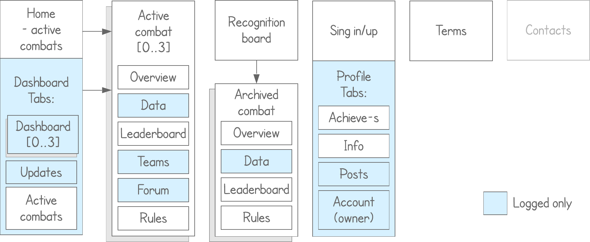

Interaction design
Datacombats is a platform for data analysis competitions serving Neurodata lab researches in emotion detection and recognition area.
Format: Wordpress-based website
Disclaimer: I have no control on implementation of my designs presented here.
Challenge: Come up with new structure and design for homepage, combat page, archive and profile with white background.
Result: New platform structure, designs for homepage, combat page, recognition board (archive) and profile. New pages proposed: dashboard for combat participants, achievements - start tab for user profile, updates. Also some changes in functionality was proposed what resulted in Team and Submission widgets in dashboard, Form a Team modal, etc. In case the team will change their mind and decide to make the site responsive, all the elements are created to be easily arranged in a responsive grid.
Discoverability vs explanations: Here we deal with so-called "experienced users", somehow familiar with what the data science is. Everything possible is discoverable instead of explained in text.
Combat process in bare outlines:
Only registered users can access any data files and participate in combats. Only combat participants may post on combat forum.
Datacombats is a small platform. Guideline assumes 0 to 3 active combats at the same time. In fact they rarely have more than one active combats simultaneously. A user can participate in more than one combats, but no one did so yet. Thus, active combats go directly to the main menu. And the dashboard, if a user is participating in a combat, becomes his homepage.
Homepage for unlogged users and logged users which not participate any combats. Includes announces of active combats. When a combat is over it remain active and stays here for another 2 weeks.
Above the fold and secondary menus behavior on scroll. Participant may navigate to leaderboard directly from his dashboard. Only public leaderboard is available during the competition period. This is a decision I am not agree with, as your final position becomes a complete surprise in the end of the combat. But.
Dashboards for a team and a solo figher. Widgets:
Including: